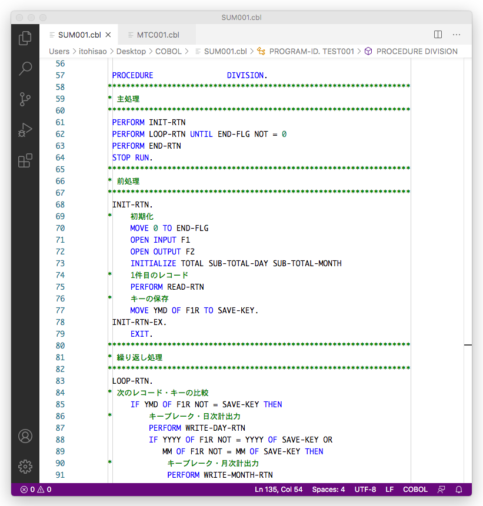

opensouce COBOLをMacで使ってみる
opensouce COBOLコンパイラは、COBOLソースコードをCソースコードに翻訳し、GNUコンパイラによりUNIX環境で実行可能な exeファイルを作成する。
macOS 10.14.6
インストール
インストールコマンド
インストールディレクトリ
バージョン
ビルドコマンド
ソースファイルの拡張子は一般的に .cbl、.cob を使用する。（これ以外でも一応コンパイルはできる）
実行
Cソースコードを出力するコマンド
コマンドの詳細はヘルプを参照のこと
ソースコードエディタ
Visual Stadio Code
EXTENSION
COBOL Source colouriser (Free)

PC環境でファイルを扱う
PCのテキストファイルを読み書きするためには、ファイルの宣言でファイル編成は行順ファイル（LINE SEQUENTIAL）とすること。
COBOLのコーディング技法について
ピリオドルール
ROCEDURE DIVISIONにおける命令文のピリオドについて整理する。
SECTION名、段落名の終わりにはピリオドをつける。
SECTIONまたは段落はひとつまたは複数の命令文から構成され、次に現れるSECTION名または段落名までをその範囲とする。このうち最後の命令文にはピリオドをつけなくてはならない。（途中の命令文はピリオドをつけてもつけなくてもかまわない）
命令文には、次のようにステートメントとEND-ステートメントの間に複数の命令文を構成するもがある。（構造化構文と言うらしい？）
これは全体で１命令文とみなし、最後のEND句のみにピリオドをつけること。内側の命令文にピリオドをつけてはならない。内側に構造化構文がネストする場合もピリオドはつけない。
サンプルのコーディングを示す。
段落・SECTIONの構造
前掲のコーディングは言語仕様に則っているのでこれでも良いが、標準的なコーディング例として、段落の終わりにラベルとEXIT文を書くという方法がよく紹介されている。一般的な作法として私もこの方式を採用している。
この形式が意味を持つのは、
段落の途中でGOTO文により段落の終わりに飛び、次のEXIT文を実行する場合である。このようにする目的は、処理の途中で何らかの異常が起こり、そのあとの処理をスキップして、呼び出し元に戻りたいときなどである。
また、EXIT文の前に、エラー時の共通的な後処理（ファイルのクローズなど）を記述することができる。これは一種の try〜catch パターンといえる。
構造化されたプログラムにおいて、GOTO文を使って良いのは、このようなフローだけとするのが一般的なルールである。